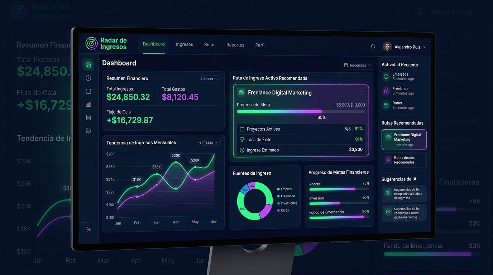

Mini-app que filtra 15 rutas de ingresos pasivos y te entrega el plan exacto para empezar según tu capital y tiempo libre. Sin perder meses en tutoriales interminables.

Si respondiste que SÍ a 3 o más opciones, estás atrapado en la parálisis de opciones. No es tu culpa: internet está saturado de promesas de dinero fácil que no encajan con tu vida real.
El Radar de Ingresos está diseñado específicamente para profesionales que no tienen 8 horas libres al día ni miles de dólares para arriesgar.
Llegas cansado del trabajo. Sabes que un solo sueldo no es seguro en Latinoamérica, pero cuando buscas opciones de ingresos extras, terminas abrumado por la cantidad de gurús diciendo cosas opuestas. Cierras la computadora sintiendo que perdiste otra noche valiosa de descanso.
El problema real no es tu falta de disciplina, es la Niebla de Opciones. Listas interminables de ideas que ocultan el riesgo, el capital necesario y las horas reales de mantenimiento que exige cada modelo de negocio.
Los tutoriales gratuitos te venden la idea correcta para el creador del video (que tiene equipos de trabajo y mucho dinero para invertir), pero totalmente incompatible con tu bolsillo y tu horario actual. Necesitas un filtro neutro y matemático.
Desliza los controles de abajo para ingresar tu presupuesto inicial y las horas semanales disponibles. El sistema calculará tu ruta óptima según nuestro algoritmo de fricción.
Esta es una simulación interactiva simplificada de la herramienta completa.
Distinto de un curso largo y tedioso. Sin teoría innecesaria ni videos de relleno. Así es como la herramienta construye tu camino al éxito en 15 minutos:
Respondes preguntas directas sobre tus ahorros disponibles, tu tiempo libre semanal real y tu tolerancia al riesgo psicológico.
El sistema cruza tus datos con 15 rutas de negocios validadas. Descarta lo que requiere alto mantenimiento o capital y prioriza lo viable para ti.
Recibes un documento de tareas exactas, día por día. Sabrás exactamente qué hacer cada noche para validar tu primer activo en 4 semanas.
Imagina que dispones de solo 2 horas al día y $200 para comenzar. Si buscas en foros, la mayoría te sugerirá montar una tienda online de importación o hacer marketing multinivel.
El Radar de Ingresos detectará de inmediato que esas rutas consumen demasiado capital inicial en publicidad y exigen logística diaria de atención. En su lugar, el sistema te dirigirá a modelos basados en servicios digitales apalancados o venta de activos digitales de bajo costo, entregándote el manual de ejecución paso a paso para configurar tu oferta en las primeras 48 horas.
No recibes información genérica ni promesas infladas. Recibes un camino diseñado exclusivamente para tus condiciones actuales.
Al adquirir tu acceso hoy al Radar de Ingresos, te llevas integradas estas 4 herramientas interactivas y automatizadas dentro de la app:
Calculadora inteligente que destapa los costos ocultos, comisiones escondidas y riesgos reales de cualquier modelo de negocio digital antes de que inviertas un solo dólar en él.
Simulador interactivo que encaja y programa las micro-tareas semanales de tu nuevo proyecto dentro de tus horas libres actuales, sin tener que sacrificar tu empleo ni tu tiempo de sueño.
Una guía paso a paso y completamente interactiva para configurar la infraestructura tecnológica de tu ruta asignada en las primeras 48 horas, evitando perderte en manuales de programación.
Herramienta integrada para volver a evaluar tu estrategia y ajustar el plan si a mitad de camino tus horas libres disminuyen o tu presupuesto para reinversión varía.
Ellos salieron de la frustración de buscar ingresos alternativos sin dirección y ahora tienen un plan estructurado:
Evitaba pensar en crear un negocio paralelo por miedo a perder mis ahorros en publicidad de Facebook. Cuando vi el plan de Radar adaptado a mis 200 dólares iniciales, sentí que mi cabeza se destrabó por completo.
Compré tres cursos costosos sobre eCommerce antes de encontrar esto. El Radar me mostró en 15 minutos por qué ninguno iba a funcionar con mi apretado horario de oficina de 9 a 6.
Dejé de perder el tiempo viendo videos motivacionales de YouTube los sábados por la noche. Ahora tengo mi ruta asignada clara en la app y sé con precisión matemática qué hacer cada semana.
Acceso inmediato a la herramienta interactiva y a todos los bonos listados por menos del costo de una cena.
Procesamiento cifrado SSL de 256 bits • Garantía incondicional de satisfacción
Queremos que pruebes la herramienta sin ningún tipo de riesgo financiero. Explora el sistema, responde las preguntas de recursos y obtén tu plan personalizado de 30 días. Si en los primeros 7 días sientes que los resultados o la ruta no son para ti, escríbenos y te devolvemos el 100% de tu dinero inmediatamente. Sin preguntas difíciles, sin llamadas y sin letra chica.
¿Tienes preguntas sobre el Radar de Ingresos? Aquí tienes las respuestas detalladas:
El acceso es inmediato y automatizado. Una vez completado el pago a través de nuestra plataforma segura, recibirás un correo electrónico automático con tu usuario de acceso directo para usar la aplicación directamente desde el navegador de tu celular, tablet o computadora personal.
No, no es un curso en video tradicional de 20 horas de teoría aburrida. Radar de Ingresos es una herramienta web interactiva diseñada para evaluar tu situación financiera y de tiempo en base a algoritmos, entregándote al final un informe ejecutable día por día. No hay videos de relleno.
El diagnóstico se realiza en unos 15 minutos en la herramienta. A partir de allí, el plan de validación de la idea recomendada está estructurado para completarse en un plazo de 30 días, dedicándole un promedio de 1 a 2 horas al día.
No. El diagnóstico del sistema detectará de inmediato cuál es tu nivel actual en áreas de marketing, ventas o programación. Si marcas que no tienes ninguna, el Radar descartará todos los negocios de alta complejidad y te asignará solo opciones factibles desde absoluto cero.
Sí, la interfaz web está diseñada para ser completamente responsiva con tecnología "Mobile-First". Puedes realizar tu diagnóstico y consultar tus tareas del plan de 30 días de forma fluida desde cualquier celular moderno iOS o Android.
Mejor aún. El simulador descarta automáticamente cualquier modelo que requiera inventarios físicos costosos o importaciones de alto valor. Te recomendará proyectos de servicios digitales o intermediación que puedes lanzar con cero inversión inicial o presupuestos mínimos de $50 USD.
Sí. Las 15 rutas de ingresos evaluadas por el algoritmo operan en el mercado digital de forma global, lo que significa que puedes crear y vender tus servicios o activos a clientes de cualquier parte del mundo residiendo en cualquier país de la región.
No hay problema. Tu licencia de Radar de Ingresos incluye acceso ilimitado de por vida. Puedes usar el Recalibrador Mensual en cualquier momento para ingresar nuevos valores de tiempo o presupuesto y obtener una ruta actualizada a tu nueva realidad laboral.
Merecías un plan de ingresos complementarios que respetara tu escaso tiempo y tus ahorros reales. Merecías la tranquilidad de saber que cada hora que trabajas de noche te está construyendo un activo duradero en la dirección correcta.
Hoy es el día de dejar de adivinar en foros o YouTube y comenzar a construir tu primera ruta de ingresos viable.
Tu orden por el Radar de Ingresos ha sido confirmada.
Hemos enviado un correo a tu casilla de mensajes con las instrucciones y tu contraseña de acceso para iniciar el diagnóstico de inmediato.
Redirigiendo a la plataforma en unos segundos...